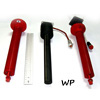
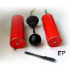
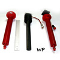
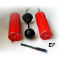
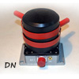
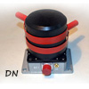

Орбіта |
|
| Близько-кругова, експлуатаційний діапазон висот | 620…710 км |
| Нахил | 97,9…98,2° |
| Сонячно-синхронна, місцевий час в низхідному вузлі | 10…14 год |
Орієнтація |
|
| Тип | Активна тривісна |
| Точність орієнтації в орбітальній системі координат | 5° (3σ) |
| Кутові швидкості стабілізації КА | < 0,01 °/с (3σ) |
Передача даних на землю |
|
| Радіолінія Х-діапазону | 30.72 Мбіт/с |
| Службова радіолінія S-діапазону | 32 Кбіт/с |
Маса КА |
|
| Всього | до 200 кг |
| В тому числі,корисного навантаження | до 75 кг |
Гарантійний термін |
|
| Час функціонування КА | не менше 3-х років |
Похибки координатно-часової прив'язки вимірювань |
|
| Похибка позиціювання КА | 1 км |
| Похибка визначення орієнтації КА (осей датчиків) | 1° |
| Похибка шкали бортового часу | 1 мсек |
Маса до 20 кг
Енергоспоживання до 51 Вт
Інформативність до 6 Гбайт за добу
 



В складі ферозондового магнітометру FGM, 3-х хвильових зондів WP, електричного зонду ЕР
Вимірювальні параметри: 3 компоненти магнітного поля, 3 компоненти електричного поля, 3 компоненти густини електричного струму в плазмі.
PI: С.М. Беляєв, Львівський центр Інституту космічних досліджень, м. Львів, УкраїнаВимірювальні параметри: спектри 3-х компонент електричного поля.
PI: H. Rothkaehl, Центр космічних досліджень, м. Варшава, Польща 

В складі блока датчиків нейтрального компоненту плазми DN і блока датчиків електронного компоненту плазми DE
Вимірювальні параметри: концентрації і температури нейтральних і заряджених частинок.
PI: В. Шувалов, Інститут технічної механіки, м. Дніпропетровськ, УкраїнаВимірювальні параметри: концентрація, температура та швидкість дрейфу іонної компоненти плазми, поперечна компонента DC електричного поля.
PI: Л. Банков, Інститут космічних досліджень і технологій, м. Софія, БолгаріяPI: А. Лукенюк, Львівський центр Інституту космічних досліджень, м. Львів, Україна
| Магнітно-хвильовий комплекс MWC: |
|---|
| 3 компоненти DC магнітного поля (0–1 Гц в системі відліку КА) |
| 3 компоненти АС магнітного поля (в діапазоні 1 Гц – Fmax) |
| 3 компоненти електричного поля (в діапазоні 1 Гц – Fmax) |
| 3 компоненти густини електричного струму (в діапазоні 1 Гц – Fmax) |
| Параметр максимальної частоти Fmax становить |
| В режимі «ВЧ спостережень» Fmax = 18,5 кГц |
| В режимі «швидкого моніторингу» Fmax = 11,9 кГц |
| В режимі «повільного моніторингу» Fmax = 375 Гц |
| Спектроаналізатор RFA: |
| Спектри 3-х компонент електричного поля в діапазоні 20 кГц – 15 МГц (з частотою з’йому даних 10 Гц) |
| Блок датчиків нейтрального компоненту плазми DN: |
| Концентрація і температура нейтрального газу (з частотою з’йому даних 10 Гц) |
| Блок датчиків електронного компонента плазми DE: |
| концентрація і температура теплової електронної компоненти плазми (з частотою з’йому даних 10 Гц) |
| Іонний дрейфометр IDM: |
| Концентрація, температура та швидкість дрейфу іонної компоненти плазми, поперечна компонента DC електричного поля (з частотою з’йому даних 10 Гц) |
| Організація – учасник | Участь в проекті |
|---|---|
Україна |
|
| Інститут космічних досліджень, м. Київ | Наукове керівництво проектом, управління ходом космічних вимірювань, оброблення, зберігання та розповсюдження даних |
| ДП «КБ «Південне», м. Дніпропетровськ | Створення КА «Мікросат-М», інтеграція корисного навантаження, планування роботи КА, формування супроводжувальної інформації о параметрах КА |
| Львівський центр Інституту космічних досліджень, м. Львів | Координація робіт по створенню бортового комплексу наукової апаратури, виготовлення магнітно-хвильового комплексу MWC, блоку електроніки для датчиків DN і DE, системи збору наукової інформації, проведення космічних вимірювань, оброблення даних |
| Інститут технічної механіки, м. Дніпропетровськ | Виготовлення датчиків DN і DE, проведення космічних вимірювань, оброблення даних |
| Національний центр управління та випробування космічних засобів, м. Дунаєвці Хмельницької обл. | Управління польотом, прийом наукової та телеметричної інформації з борта КА |
Польща |
|
| Центр космічних досліджень, м. Варшава | Виготовлення приладу RFA, проведення космічних вимірювань, оброблення даних |
Болгарія |
|
| Інститут космічних досліджень та технологій, м. Софія | Виготовлення приладу IDM, проведення космічних вимірювань, оброблення даних |
Наукова координація |
|
| Георгій В’ячеславович Лізунов georgii.lizunov@gmail.com |
Загальне керівництво |
| Олексій Сергійович Парновський parnowski@gmail.com |
Група управління ходом космічного експерименту |
| Олена Володимирівна П’янкова el.piankova@gmail.com |
Центр оброблення, зберігання та розповсюдження наукової інформації PROMIS |
| Тетяна Владиславівна Скороход tayna_83@ukr.net |
Інформаційний супровід, медіа-дані |
Комплекс наукової апаратури |
|
| Адольф Антонович Лукенюк luk@isr.lviv.ua |
Загальне керівництво Система збирання наукової інформації |
| Сергій Михайлович Беляєв belyayev@isr.lviv.ua |
Магнітно-хвильовий комплекс MWC |
| Hanna Rothkaehl hrot@cbk.waw.pl |
Спектроаналізатор RFA |
| Валентин Олексійович Шувалов shuv@vash.dp.ua |
Аналізатор густини частинок DN – DE |
| Людмил Банков ludmil.bankov@gmail.com |
Іонний дрейфометр IDM |
Космічний апарат |
|
| Олександр Леонідович Макаров info@yuzhnoye.com |
Загальне керівництво |
| Олександр Геннадійович Меланченко info@yuzhnoye.com |
Створення та експлуатація КА «Мікросат-М» Формування супроводжувальної інформації |
Управління польотом та прийом даних |
|
| Євген Дмитрович Ярмольчук info@yuzhnoye.com |
Підсистема формування координаційного плану роботи КА |
| НЦУВКЗ | Центр управління польотом Прийом наукової та телеметричної інформації |
Управління польотом та прийом даних |
|
| Леонід Феоктистович Чорногор leonid.f.chernogor@univer.kharkov.ua |
Загальне керівництво Радіофізична обсерваторія Харківського національного університету імені В.Н. Каразіна |
Про історію проекту:
Лізунов Г.В. Українські супутникові проекти іоносферних спостережень: від «Попередження» до «Іоносату»
Обґрунтування проекту:
Korepanov V., Lizunov G., Fedorov O., Yampolsky Yu., Ivchenko V. Ionosat – ionospheric satellite cluster
Огляд проекту в цілому:
Лизунов Г.В., Лукенюк А.А., Макаров А.Л., Фёдоров О.П. Космический проект «Ионосат – Микро»: цели и методы
Космічний апарат:
Макаров А.Л., Шовкопляс Ю.А., Москалев С.И., Галабурда Д.А. Космический аппарат «Микросат»
Магнітно-хвильовий комплекс MWC:
Корепанов В.Е., Беляев С.М. Электромагнитные волновые измерения в проекте «Ионосат – Микро»
Аналізатор густини частинок DN – DE:
Кулагин С.Н., Письменный Н.И., Токмак Н.А., Цокур А.Г. Аппаратура для диагностики нейтрального и заряженных компонентов ионосферной плазмы в проекте «Ионосат – Микро»
Спектроаналізатор RFA:
Роткель Х., Моравски М., Кшевски М., Лизунов Г.В. Диагностика спектра плазменных волн с использованием радиочастотного анализатора RFA